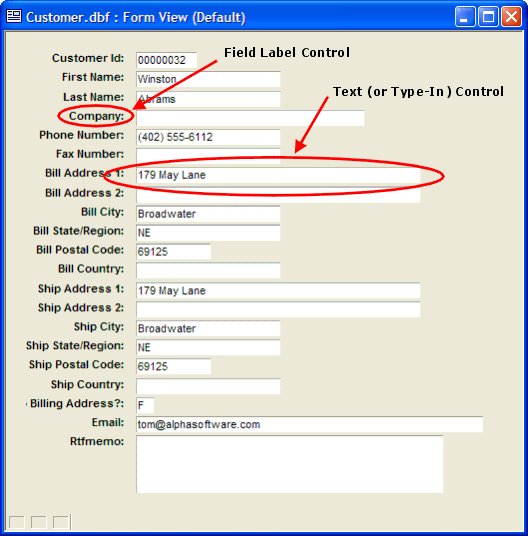
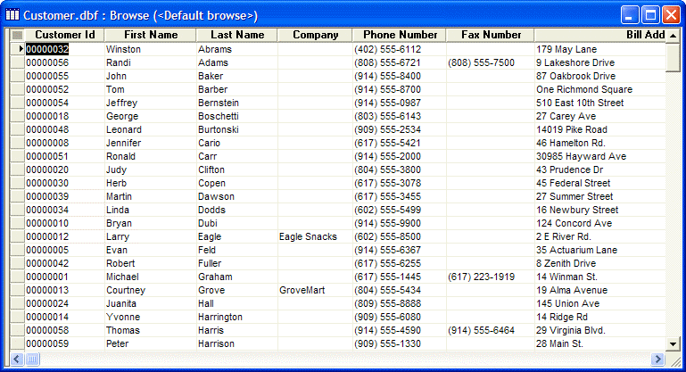
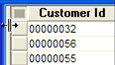
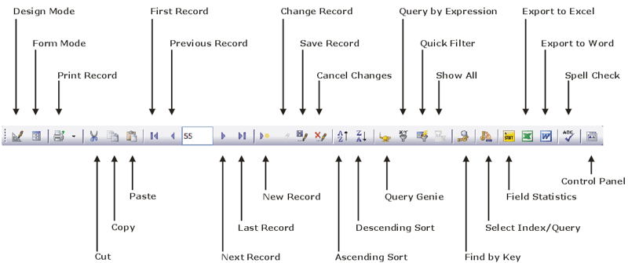
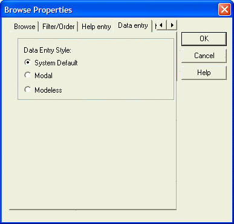

Working with Records
In this lesson, you learn how to view and enter data in Alpha Anywhere, and how to create, change, save, and delete table records.
Contents
In the following tutorial lesson, you learn about viewing, entering, and changing information in a database. Below are some key terms and concepts to help you get a basic understanding of how Alpha Anywhere stores and organizes data.
Review and become familiar with the terms and concepts described in the following table.
|
Term |
Description |
|
Database |
A collection of data used for sorting, retrieving, or in some other way, manipulating stored information in a data-management solution. Information in a database is stored in several different files called tables. |
|
Table |
A collection of data about a specific subject or a distinct topic. A database can contain one or more tables. A table is made up of rows ( records ) and columns ( fields ). |
|
Record |
A collection of related data fields about a single entity, such as a person, an item, or an event. For example, a table of employees would contain records of individual employees. |
|
Field |
A portion of a record containing a single piece of information. For example, an employee first name might be one field in the employee record. |
|
Set |
A collection of logically related tables, linked together according to a specified criteria. |
Alpha Anywhere uses form and browse layouts for entering and reviewing information stored in tables. Each layout (view) provides features and tools for entering and editing data.
|
View |
Description |
|
Form view |
Shows one record at a time, with the fields arranged in a single page layout, called a Form. A form is a window containing fields from the table, and field values for the record you are viewing. Each table has at least one form, called the Default Form. |
|
Browse view |
Shows multiple records, with fields arranged in a tabular format of rows and columns, like a spreadsheet, which Alpha Software calls a Browse. Every table has a Default Browse. |
To open a default view:
Double-click a table or set in the AlphaSports Control Panel to open its Default Browse .
Select a table or set, click the View button in the Control Panel, and select Default Browse or Default Form.
Right-click a table or set in the Control Panel, and select Open Default Browse or Open Default Form from the right-click menu.
You can switch between browse view and form view by pressing F8.
In Form view, you typically work with one record at a time. In the next procedure, you look at the AlphaSports Customer table data in Default Form view.
To open the Customer table Default Form :
Right-click the Customer table in the AlphaSports Control Panel, and select Open Default Form from the right-click menu. The Customer table Default Form view appears.

The form displays one record, which corresponds to a single row of data in the Customer table. The objects displayed on a form are called controls. Forms can display field label, text box, image, graphic, button, and other controls.
You can enter and edit records using browse or form view. In the next procedure, you view AlphaSports records using the Default Browse view.
To open the Customer table Default Browse view:
-
Double-click the AlphaSports Customer table
in the Control Panel. The Customer table Default Browse appears.

The field cursor (highlighted area) indicates the current field. The record cursor
 , on the left side of the screen, indicates
the current record.
, on the left side of the screen, indicates
the current record. Use the vertical scroll bar to view more records in the Customer table.
Use the horizontal scroll bar to see additional record data fields.
Optionally, you can split a browse into groups of columns to keep the left-most columns in view. Splitting a browse lets you view multiple copies of the same browse, side by side, in the same window. This is useful when a browse is wider than the screen, or when you want to work in different areas of the browse simultaneously. You can split a Browse up to three times for a total of four sections.
 Note : Appearance modifications,
like splitting a browse, remain only as long as the
browse is open; once you close the browse or change to form view, the
browse resets to its default view.
Note : Appearance modifications,
like splitting a browse, remain only as long as the
browse is open; once you close the browse or change to form view, the
browse resets to its default view.
To split the browse view:
-
Slowly move your pointer cursor to the left edge of the browse. Its appearance changes to a splitting handle
 , which indicates that the cursor is above the splitting bar.
, which indicates that the cursor is above the splitting bar.

-
Select and drag the splitting bar to the right, to where you want to divide the browse.

Use the horizontal scroll bar in the right pane to examine fields in the right-most columns.
 Note : The fields in
the left pane remain stationary.
Note : The fields in
the left pane remain stationary.
To remove the split, position the mouse cursor over the left edge of the right pane.
When the cursor changes to the splitting handle, click and drag the splitting bar all the way to the left.
 Note : When using a
split browse, you can only edit records in the right pane.
Note : When using a
split browse, you can only edit records in the right pane.
You can navigate through table records in browse or form view using the keyboard or toolbar controls. In the next procedure, you use both to examine the records in the Customer table.
To navigate records:
Open the Customer table in Default Browse view by double-clicking its icon in the AlphaSports Control Panel. The Customer table Default Browse appears and the standard toolbar changes to the form and browse view toolbar. Picture
{kind=link}

The form and browse view toolbar has navigation buttons (outlined in the figure above) for switching records, and a record selector to go directly to a specified record number.
To move the cursor from field to field or from object to object, within a form, you can use the following keyboard commands:
|
Keystroke |
Action |
|
UP ARROW |
Move to the previous record |
|
DOWN ARROW |
Move to the next record |
|
LEFT ARROW |
Move left one field |
|
RIGHT ARROW |
Move right one field |
|
PAGE UP |
Move up one screen of records |
|
PAGE DOWN |
Move down one screen of records |
|
HOME or CTRL+LEFT ARROW |
Move to the first field in the current record |
|
END or CTRL+RIGHT ARROW |
Move to the last field in the current record |
|
ENTER or TAB |
Move to the next field |
|
CTRL+HOME |
Move to the first record in the table |
|
CTRL+END |
Move to the last record in the table |
|
F8 |
Switch between Form and Browse view |
Using Modal and Modeless Data Entry
Some users prefer being able to edit a record at any time, while others prefer to protect records by forcing users to execute a command before editing a record.
Alpha Anywhere gives you two choices for data entry on forms and browses: modal and modeless.
|
Data Entry Mode |
Description |
|
Modal |
Prevents users from making edits, unless specific actions are taken. |
|
Modeless |
Users can edit any fields or records without taking prior actions. |
To set the system data entry mode:
Select View > Settings from the menu. The Settings dialog box appears.
Expand the System menu, and select Data Entry. The Settings dialog box displays the data entry style dialog. The default system data entry style is modeless.
Change the data entry style by selecting Modal. In modal data entry mode:
To edit a record, you must first select the
 Change Record
button on the toolbar, or press ALT+C.
Change Record
button on the toolbar, or press ALT+C.To start a new record, you must first select the
 Enter New
Record button on the toolbar, or press CTRL+E.
Enter New
Record button on the toolbar, or press CTRL+E.Pressing Enter or Tab in the last data field does not open a new record.
After saving the record, edits are disallowed.
To change the data entry mode for any open form or browse, press F3.
If the data entry style is modeless, you can edit any fields or records
without first selecting  or
or  . While modeless
data entry is convenient, it allows accidental field editing.
. While modeless
data entry is convenient, it allows accidental field editing.
When designing a form, to change the data entry setting, press F12. The Form Properties dialog box appears. When designing a browse, select Browse > Browse Properties to change the data entry setting.
-
Select the Data entry tab, and select Modeless.

Your selection specifies the data entry mode for a specific Form or Browse. Selecting System Default applies the View > Settings > System > Data Entry settings.
You enter and change data in a form or a browse by placing your cursor in a field and typing.
To enter and change records:
In the Customer table's Default Browse, highlight the first name field of the last record, and enter your first name. A small pencil indicator appears in the record selector column of the record in which you are entering or changing data. Note : If you are unable to enter or change data, press F3, or select Allow Edits from the Browse menu.
Press Tab or Enter, to move the cursor to the next field. Alpha Anywhere saves the changes you make in a field when you move your cursor to the next field.
Fill in several fields with data about yourself.
With your cursor in the last Customer table data field (Email), press Tab or Enter. A new, blank record appears.
To add a new record, you must open a blank record. You can open a blank record in one of the following ways:
Click the New Record button on the toolbar
.Select Records > Enter New Record.
Press CTRL+E.
Navigate to the last record in the table, and press Enter.
A new, blank record appears at the end of the table, and you can begin entering data in it.
You use the undo command to reverse changes in field data, before moving your cursor to a new field and the field data is saved. You can undo recent changes in field data in one of the following ways:
Click the Cancel Changes button on the toolbar .
Select Edit > Undo.
Press ESC.
While editing a record, clicking the Cancel Changes button or pressing ESC, will undo the changes you made to the record. Once you start working with another record, Alpha Anywhere saves your previous record changes, and you cannot undo them by either method.
Alpha Anywhere saves the changes you make to a record, including adding a new record, when you move to another record, close the active table or other data entry object, or exit from Alpha Anywhere.
To save changes while viewing a record, by click the Save
Record button  or press F9.
or press F9.
You can delete a record from a table by selecting the record, and pressing CTRL+D, or selecting Records > Delete. You cannot recover deleted records. In a Browse you can delete multiple, sequential records, by dragging the Row Selector to highlight records, and pressing CTRL+D to delete them.
Refer to <span class=Screen>Duplicate Records Genie</span>.
In this lesson, you viewed Alpha Anywhere data using the Default Browse and Default Form views. You learned how to enter and change record data, and how to add and delete records from a table.
What's Next?
See Finding, Selecting, and Ordering Records to learn how to find, sort, and filter records.
See Also
Working with Records, Opening a Form, Opening an Existing Browse